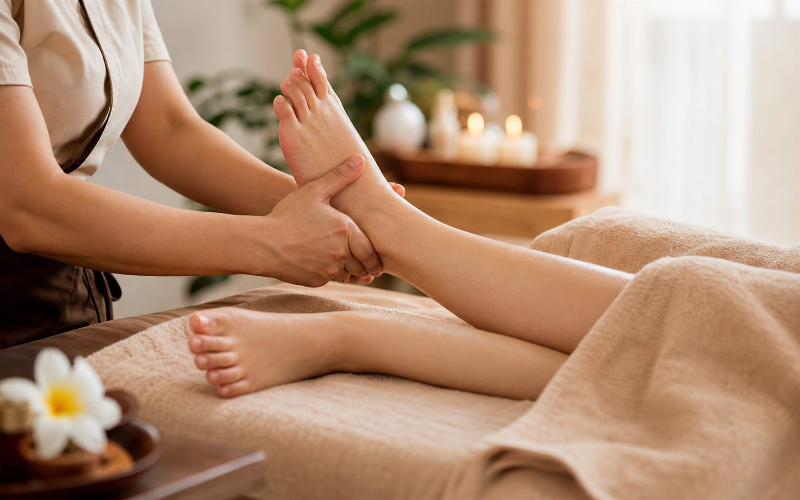

30 min
- Fotmassage
- 400 kr
Massage i Handen
Fotmassage i Handen
Fotmassage är en behandling för dig som känner dig tung, trött eller spänd i fötter och underben. Hos Lucky Spa Massage i Handen arbetar vi lugnt och metodiskt för att ge dina fötter en skön paus.

Vad är fotmassage?
Fotmassage fokuserar på fötter, hålfot, hälar, tår och ofta även underben. Behandlingen kan kännas särskilt skön om du står eller går mycket, tränar, arbetar långa dagar eller bara vill unna dig en lugn stund. Lucky Spa Massage erbjuder fotmassage i Handen för dig som söker lokal massage med enkel bokning.
För många är fotmassage ett bra val när de vill ha en kortare men tydligt avkopplande behandling. Hos Lucky Spa Massage kan du boka 30 eller 60 minuter fotmassage beroende på hur mycket tid du vill ge kroppen.
Lucky Spa Massage finns på Runstensvägen 34 i Handen och erbjuder fotmassage i en lugn miljö där behandlingen anpassas efter hur dina fötter och underben känns just den dagen.
Priser